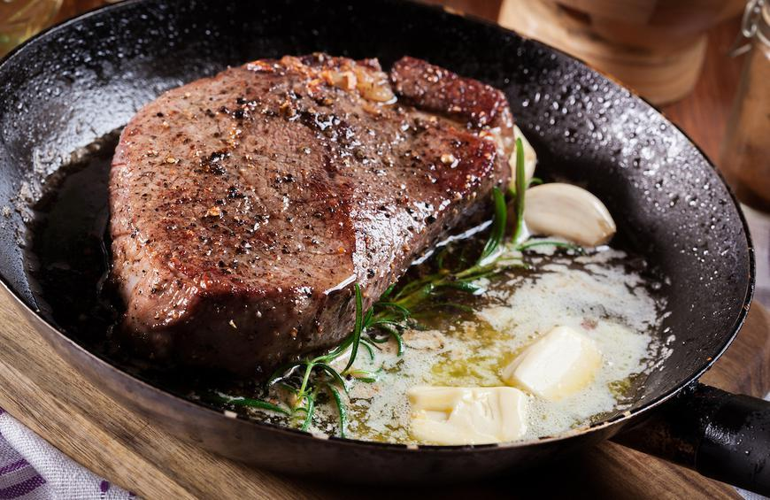

Simple Steak Recipe
Simple Steak Recipe

Description
This preparation for steak works for multiple different cuts, though the time and temperature might shift slightly depending on the leanness/size of the cut you're using. Herbs used can be swapped out as desired. For the sake of this recipe, I will be using a 12 oz. boneless ribeye.
Thicker cuts might benefit from spending some time in an oven to finish off cooking the inside without overcooking the outside.
Ingredients
- 12 oz. boneless ribeye steak (or other desired cut).
- 1 tbsp of olive oil (not virgin or extra virgin)
- Salt
- Black pepper
- 1-2 twigs of fresh thyme, or 1/4-1/2 tsp of dried thyme
- 1 clove of garlic
- 1-2 tbsp of butter
Preparation
- Preheat cast-iron pan on medium-high heat.
- Preheat oven to 450º F.
- Add oil, and let it heat up for about 30 seconds or until simmering
- Carefully add steak to the pan, so that the side closest to you makes contact first, and then lay it down going away from you. Also add the twigs of thyme and whole garlic cloves.
- Allow steak to cook for about 3 minutes, or until the first side is browned sufficiently.
- Flip and let the other side reach a similar browned state
- Once both sides are browned, add the whole pan to the oven for 2-6 minutes, depending on thickness of cut and desired wellness.
- Remove steak from any heat, add butter to the top of it, and let it rest for at least 5 minutes before serving